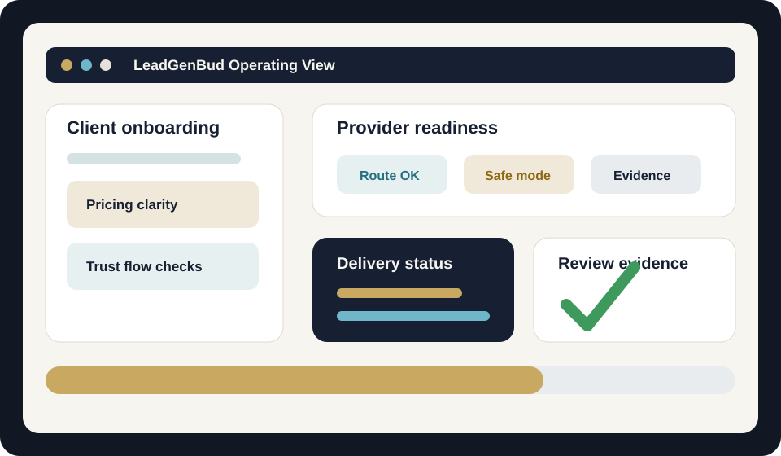
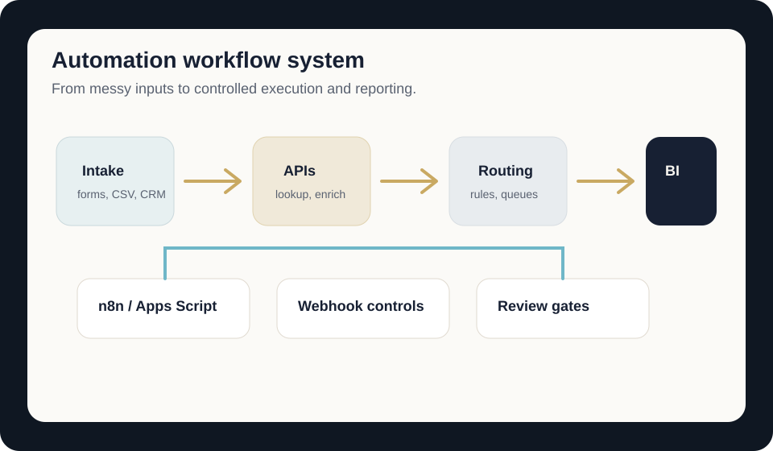
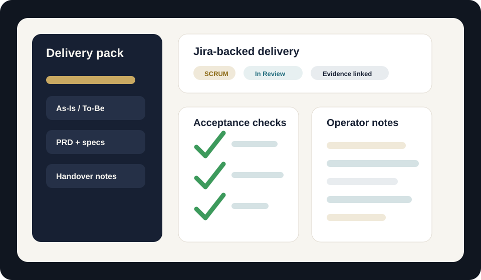

Hire me for a role
Business Analyst, AI Automation Specialist, Systems Analyst, Product Operations, or Delivery Consultant roles where business clarity and practical implementation both matter.
Download CVIndependent consultant
I help founders and small teams turn messy operations into clear, automated systems.
I help founders and small teams turn messy operations into clear, automated systems using AI, APIs, dashboards, workflow design, and practical delivery processes.
Business Analyst, AI Automation Specialist, Systems Analyst, Product Operations, or Delivery Consultant roles where business clarity and practical implementation both matter.
Download CVAudits, workflow design, dashboards, automations, delivery documentation, and implementation support for small teams that need a clearer operating system.
Email MeMap repetitive work, connect tools, and build practical AI-assisted workflows that teams can actually run.
Review messy operations, identify bottlenecks, and turn scattered processes into a clear improvement plan.
Improve onboarding, data capture, routing, provider checks, and follow-up workflows around growth operations.
Design SQL/API-backed reporting flows so decisions are based on visible data, not guesswork.
Create PRDs, runbooks, test notes, handover docs, and user-facing guides that reduce support friction.
Use Jira, review gates, GitHub Actions evidence, and security-aware delivery habits to keep work controlled.
Results-driven AI Automation & Business Systems Consultant with over ten years of independent consulting experience designing end-to-end business systems, building workflow automations, and translating complex operational problems into practical, scalable solutions. A hybrid profile combining analytical depth with hands-on technical execution — moving between stakeholder discovery, product thinking, data workflows, automation build, review gates, and user adoption.
Hands-on practitioner with n8n, Python, REST APIs, Google Apps Script, Laravel/PHP, SQL/MySQL, GitHub Actions, and LLM-assisted tooling. Recent work includes LeadGenBud, a client-facing lead generation platform where product clarity, automation, data quality, and delivery governance all matter. I bring perspective, determination, and strong analytical judgment: when a workflow is blocked, I investigate logs, queues, schemas, providers, review output, and user impact before choosing the next move.
My strength is not only building; it is stepping back, seeing the system, adapting quickly, and finding workable solutions outside the obvious path while keeping evidence, security, and business outcomes in view.
Product and delivery work across a lead generation platform: onboarding, pricing and CTA clarity, dashboard usability, provider-readiness checks, Laravel route/controller validation, Jira-backed execution, and safer automation workflows for repeatable growth operations.
2014 — present · Consulting & delivery. Started as an independent consultant: discovery, As-Is / To-Be processes, automation for finance, operations, reporting, and communications — always with documentation and adoption, not “drop and run” scripts.
Growth & lead systems (AU). Built and scaled founder-led digital work: LeadGenBud (lead generation product, onboarding, trust and conversion workflows), Earthstralia (web presence, performance marketing, operational rhythm), and Lead Gen Tax (B2B lead systems for the Australian accounting ecosystem, integrations with practice workflows).
2019 — present · Independent Projects. Long-running Solutions Developer track: bespoke builds, APIs, and orchestration across client and internal initiatives — same engineering discipline as later product work.
2021 — present · Tradeasy.me. Founder & operator of a trading-focused web product: end-to-end UX responsibility, Python and Google Apps Script for reporting and ops, API integrations, and continuous reduction of manual overhead.
Sacred Arithmetic (ongoing). A parallel line of work: structured educational content and intellectual depth on the web — curriculum-style organisation, long-form material, and delivery as a content platform (not a generic blog). Complements the technical stack with proof of sustained authoring and information architecture.
Over the last several years, I have built and operated production systems, client workflows, and digital products through hands-on execution in close collaboration with AI tooling, while retaining full ownership of architecture, quality, and business outcomes.
I also apply a natural, reality-anchored conceptual approach to AI system design: identifying structural patterns, feedback loops, and decision layers that make complex systems more explainable, more useful in real operations, and easier for teams to adopt at scale.
n8n, Zapier, Make, Google Apps Script, Python, LLM workflows, prompt engineering, tool selection.
REST APIs, webhooks, JSON, OAuth, SQL/MySQL/SQLite, schema inspection, dedupe, data-quality checks.
Laravel/PHP, routes, controllers, artisan checks, provider readiness, dashboards, onboarding and CTA flow.
Atlassian Jira, PR review, ReviewBud/OpenOps style gates, security notes, GitHub Actions, Render and VPS evidence.
Key achievements
Public sites and systems representative of lead generation, product, and conceptual work.
Client-facing lead generation product work: onboarding, pricing clarity, CTA flow, dashboard clarity, and safe automation operations.
ProductFounder-led product since 2021: trading UX, ops automation (Python, Apps Script), APIs, reporting.
PresenceQuantum alignment and online presence.
Lead genLead generation for the Australian tax sector.
ProjectDedicated project web presence.
EducationStructured curriculum, long-form teaching, and web delivery — intellectual property as a platform.

Client-facing onboarding, pricing clarity, provider checks, and review evidence for safer growth operations.

APIs, scripts, routing, reporting, and runbooks that reduce recurring manual work.

As-Is / To-Be notes, PRDs, acceptance checks, Jira updates, and operator-ready handover material.
Diagnose the real operational problem before choosing tools.
Map the workflow, data, risks, and handover requirements.
Build the smallest useful system with clear tests and review evidence.
Document the workflow so the team can use it without dependency.
Master of Law (LL.M.)
University of Aix-en-Provence, France — 2007
Available for automation consulting, business systems audits, lead generation workflows, dashboards, and project delivery support.
Official portfolio target: romanlucian.dev — project links open in a new tab. Contact: romanlucian@proton.me